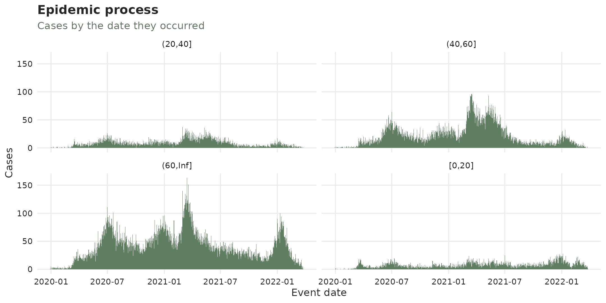
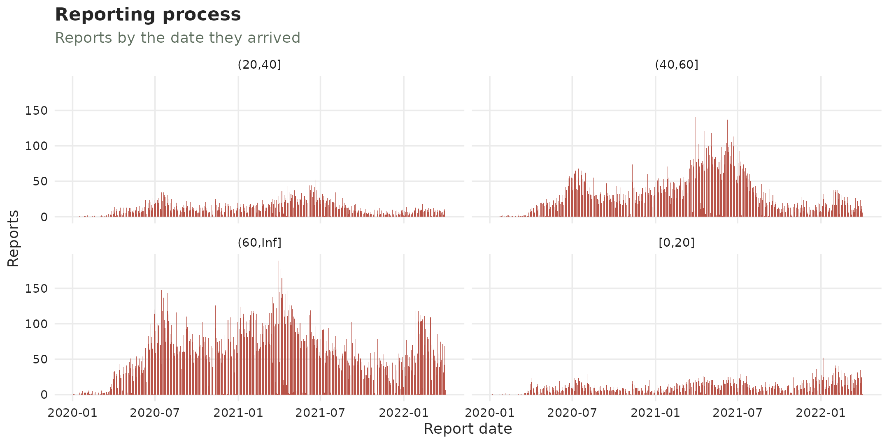
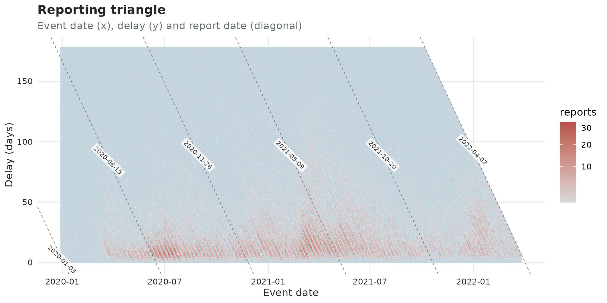

Three questions frequently appear with every surveillance dataset:
What is structurally wrong with it?: missing and impossible dates, data that stops before its own
now.diagnose()answers this.What is in it?: how many cases, over what period, arriving how late, how sparse, how do they vary among strata.
summary()answers these.Are there any changes in the epidemic or the reporting mechanism? To answer these we look at batches, drifts as well as visualizations of the processes.
This article follows the sari_bh dataset, a linelist of
severe acute respiratory illness (SARI) cases from Belo Horizonte
(Brazil) from 2020 to 2022:
data(sari_bh)
#Create an age category for strata
sari_bh <- sari_bh |>
mutate(age_cat = cut(age_yrs, breaks = c(0, 20, 40, 60, Inf), include.lowest = TRUE))
sari <- tbl_now(sari_bh,
event_date = symptom_onset_date,
report_date = record_date,
strata = age_cat
)
sari
#> # A tibble: 65,404 × 9
#> # Data type: "linelist"
#> # Frequency: Event: `days` | Report: `days`
#> symptom_onset_date record_date final_classification case_evolution age_yrs age_cat .event_num .report_num .delay
#> <date> <date> <chr> <chr> <dbl> <fct> <dbl> <dbl> <dbl>
#> [event_date] [report_date] [...] [...] [...] [strata] [...] [...] [...]
#> 1 2020-02-11 2020-03-05 Not specified Cured 59 (40,60] 44 67 23
#> 2 2020-01-21 2020-02-06 Not specified Cured 79 (60,Inf] 23 39 16
#> 3 2020-03-30 2020-04-17 Not specified Cured 72 (60,Inf] 92 110 18
#> 4 2020-03-26 2020-04-02 Not specified Cured 82 (60,Inf] 88 95 7
#> 5 2020-03-20 2020-04-13 Not specified Cured 50 (40,60] 82 106 24
#> # ────────────────────────────────────────────────────────────────────────────────────────────────────────────────────────────────────────────────────────────────
#> # Now: 2022-04-03 | Event date: "symptom_onset_date" | Report date: "record_date"
#> # Strata: "age_cat"
#> # ────────────────────────────────────────────────────────────────────────────────────────────────────────────────────────────────────────────────────────────────
#> # ℹ 65,399 more rows1. Diagnose what is structurally wrong
Linelist data
Once the tbl_now is specified, diagnose()
can be used to print a report: with errors, warnings and notes:
diagnose(sari)
#> ── Diagnosis of a <tbl_now> ────────────────────────────────────────────────────────────────────────────────────────────────────────────────────────────────────
#> 2 warnings, 16 notes, 12 passed, 5 skipped.
#>
#> Warnings (2)
#> ! missing/record_date: 12 rows have NA values in the report_date column "record_date".
#> → A row with no report date cannot be placed on the reporting triangle.
#> ! ordering/event_to_report: 30 rows have a `report_date` before `event_date`
#> → A negative reporting delay is not a delay; the two date columns may be swapped, or the rows may be data-entry errors.
#>
#> Notes (16)
#> ℹ declarations/undeclared: 3 columns "final_classification", "case_evolution", and "age_yrs" are not declared as strata or covariates.
#> → Declare them with `strata = ` to model them separately, or let `to_count()` pool them away -- which is what the `tbl_now_to_()` converters do.
#> ℹ now/now_gap_event [(20,40]]: The last event date is 9 days before now ("2022-04-03").
#> → Everything in that window is still arriving; it is what a nowcast is for, and it is also what makes the last points of any plot look like a decline.
#> ℹ now/now_gap_event [(40,60]]: The last event date is 9 days before now ("2022-04-03").
#> ℹ now/now_gap_event [(60,Inf]]: The last event date is 9 days before now ("2022-04-03").
#> ℹ now/now_gap_event [[0,20]]: The last event date is 7 days before now ("2022-04-03").
#> ℹ now/now_gap_event: The last event date is 7 days before now ("2022-04-03").
#> ℹ now/now_gap_report [(20,40]]: The last report date is 2 days before now ("2022-04-03").
#> ℹ now/now_gap_report [(40,60]]: The last report date is 2 days before now ("2022-04-03").
#> ℹ now/now_gap_report [[0,20]]: The last report date is 2 days before now ("2022-04-03").
#> ℹ strata/size [[0,20]]: The smallest stratum is "[0,20]" with 6286 cases, 9.6% of the total.
#> ℹ strata/sparsity [(20,40]]: The sparsest stratum is "(20,40]": 66 of the 827 days between the minimum event (2019-12-29) and the now (2022-04-03) carry no cases at all (8%, against 1.2% pooled over every stratum).
#> → A stratum that is mostly zeros is the one a per-stratum fit will struggle with; pooling it is often better than fitting it. When every stratum is mostly zeros the grid is finer than the data -- `aggregate_time_units()` coarsens it.
#> ℹ truncation/event_date [(20,40]]: 66 event dates are younger than the 95th percentile of the delay, so their counts are still filling in; an estimated 18.5% of their eventual total has not arrived.
#> → This is right-truncation, and it is the reason to nowcast rather than a defect. Cut the series at "2022-01-08" to describe it instead.
#> ℹ truncation/event_date [(40,60]]: 70 event dates are younger than the 95th percentile of the delay, so their counts are still filling in; an estimated 15.3% of their eventual total has not arrived.
#> ℹ truncation/event_date [(60,Inf]]: 76 event dates are younger than the 95th percentile of the delay, so their counts are still filling in; an estimated 14.3% of their eventual total has not arrived.
#> ℹ truncation/event_date [[0,20]]: 78 event dates are younger than the 95th percentile of the delay, so their counts are still filling in; an estimated 22% of their eventual total has not arrived.
#> ℹ truncation/event_date: 78 event dates are younger than the 95th percentile of the delay, so their counts are still filling in; an estimated 17% of their eventual total has not arrived.
#>
#> ✔ 12 passed: declarations/temporal_effects, missing/age_cat, missing/symptom_onset_date, now/event_date, now/now_gap_report, now/report_date, simultaneously missing/event and report dates, units/declared, units/delay, units/event_grid, and units/report_grid
#> ─ 5 skipped: duplicates/key, negatives/count, ordering/event_to_revision, ordering/report_to_revision, and strata/pending
#>
#> ℹ 35 findings. Use `dplyr::filter()` or `tibble::as_tibble()` for the table.in our case we have rows with missing report dates which we’ll input via censoring (we’ll utilize the last value observed):
sari <- sari |> censor_reports(is.na(record_date))while for the 30 rows where the report date was set before the event we’ll drop them as there is no principled way of handling these cases:
sari <- sari |> filter(record_date >= symptom_onset_date)The notes can also be reduced. tbl_now() aims for the
bare minimum for a nowcast hence it complains about the extra columns
that are neither covariates nor strata. We can remove them to silence
the note:
sari <- sari |> select(-age_yrs, -final_classification, -case_evolution)This now leads to a cleaner diagnose which can be called the same way or printed as a tibble by assigning it to an object:
| stratum | n_affected | n_total | prop | message | rows |
|---|---|---|---|---|---|
| (20,40] | 9 | NA | NA | The last event date is 9 days before now (“2022-04-03”). | |
| (40,60] | 9 | NA | NA | The last event date is 9 days before now (“2022-04-03”). | |
| (60,Inf] | 9 | NA | NA | The last event date is 9 days before now (“2022-04-03”). | |
| [0,20] | 7 | NA | NA | The last event date is 7 days before now (“2022-04-03”). | |
| all | 7 | NA | NA | The last event date is 7 days before now (“2022-04-03”). | |
| (20,40] | 2 | NA | NA | The last report date is 2 days before now (“2022-04-03”). | |
| [0,20] | 6284 | 65374 | 0.0961238 | The smallest stratum is “[0,20]” with 6284 cases, 9.6% of the total. | |
| (20,40] | 66 | 827 | 0.0798065 | The sparsest stratum is “(20,40]”: 66 of the 827 days between the minimum event (2019-12-29) and the now (2022-04-03) carry no cases at all (8%, against 1.2% pooled over every stratum). | |
| (20,40] | 66 | 761 | 0.0867280 | 66 event dates are younger than the 95th percentile of the delay, so their counts are still filling in; an estimated 18.5% of their eventual total has not arrived. | |
| (40,60] | 70 | 780 | 0.0897436 | 70 event dates are younger than the 95th percentile of the delay, so their counts are still filling in; an estimated 15.4% of their eventual total has not arrived. | |
| (60,Inf] | 76 | 810 | 0.0938272 | 76 event dates are younger than the 95th percentile of the delay, so their counts are still filling in; an estimated 14.3% of their eventual total has not arrived. | |
| [0,20] | 78 | 776 | 0.1005155 | 78 event dates are younger than the 95th percentile of the delay, so their counts are still filling in; an estimated 22.1% of their eventual total has not arrived. | |
| all | 78 | 817 | 0.0954712 | 78 event dates are younger than the 95th percentile of the delay, so their counts are still filling in; an estimated 17% of their eventual total has not arrived. |
Cumulative data: the revisions
Cumulative counts represent at each entry the best estimate of the
running total of cases by that event-report date. As such, they can get
revised downwards, and a downward revision can become a negative
‘increment’ the moment the series is de-accumulated. We can see
this example with the flusight dataset:
data(flusight)
flu_now <- flusight |>
filter(location_name == "Alabama", target_end_date >= as.Date("2023-01-01")) |>
tbl_now(
event_date = target_end_date,
report_date = as_of,
case_count = observation,
data_type = "count-cumulative"
)
diagnose(flu_now)
#> ── Diagnosis of a <tbl_now> ────────────────────────────────────────────────────────────────────────────────────────────────────────────────────────────────────
#> 1 warning, 5 notes, 12 passed, 4 skipped.
#>
#> Warnings (1)
#> ! units/delay: 563 rows have a fractional `.delay`.
#> → A fractional delay is what a converter chokes on: the two date columns are on different grids. `align_weeks()` is the fix for weekly data.
#>
#> Notes (5)
#> ℹ declarations/undeclared: 1 column "location_name" is not declared as strata or covariates.
#> → Declare it with `strata = ` to model it separately, or let `to_count()` pool it away -- which is what the `tbl_now_to_()` converters do.
#> ℹ negatives/increment: 73 de-accumulated increments are negative (total -175).
#> → A cumulative total that goes down is a revision. `to_count(x, to = "count-incidence")` shows the increments; the row indices are its rows, not this object's, so none are given.
#> ℹ now/now_gap_event: The last event date is 0.57 weeks before now ("2025-11-12").
#> → Everything in that window is still arriving; it is what a nowcast is for, and it is also what makes the last points of any plot look like a decline.
#> ℹ truncation/event_date: 24 event dates are younger than the 95th percentile of the delay, so their counts are still filling in; an estimated 7.6% of their eventual total has not arrived.
#> → This is right-truncation, and it is the reason to nowcast rather than a defect. Cut the series at "2025-05-28" to describe it instead.
#> ℹ units/report_grid: "as_of" is declared "weeks" but 563 of its dates do not sit on the same grid as the earliest event date ("2023-01-07").
#> → Weekly columns on different weekdays are the usual cause; fix them with `align_weeks()` rather than rounding.
#>
#> ✔ 12 passed: declarations/temporal_effects, duplicates/key, missing/as_of, missing/observation, missing/target_end_date, now/event_date, now/now_gap_report, now/report_date, ordering/event_to_report, simultaneously missing/event and report dates, units/declared, and units/event_grid
#> ─ 4 skipped: ordering/event_to_revision, ordering/report_to_revision, strata/pending, and strata/size
#>
#> ℹ 22 findings. Use `dplyr::filter()` or `tibble::as_tibble()` for the table.The first thing to note here is that data is weekly though sometimes
reported on a Saturday and sometimes on a Wednesday. We can use the
align_weeks() function to set all the days to the same day
of the week so that the delays are integer numbers:
#Day 4 is a wednesday as per wday()
flu_now <- flu_now |> align_weeks(align_on_day = 4)The remaining notes refer to the distance between today and the now as well as the fact that this dataset sometimes gets revised in its number of cases (hence the negative ‘increments’)
2. Summarise what is in the data
The summary() function returns a table, and prints it
one component at a time:
summary(sari)
#> ── Summary of a <tbl_now> ──────────────────────────────────────────────────────────────────────────────────────────────────────────────────────────────────────
#> 91 rows in 5 components; strata: "(20,40]", "(40,60]", "(60,Inf]", and "[0,20]".
#>
#> cases
#> n = dates on the grid; total = cases
#> quantity stratum n total mean sd min q25 q50 q75 q90 max prop_zero
#> <chr> <chr> <int> <dbl> <dbl> <dbl> <dbl> <dbl> <dbl> <dbl> <dbl> <dbl> <dbl>
#> 1 per_event_date all 827 65374 79.0 51.4 0 44 72 109 144 307 0.0121
#> 2 censored_per_event_date all 827 12 0.0145 0.120 0 0 0 0 0 1 0.985
#> 3 per_event_date (20,40] 827 6846 8.28 6.64 0 3 7 12 17 37 0.0798
#> 4 censored_per_event_date (20,40] 827 0 0 0 0 0 0 0 0 0 1
#> 5 per_event_date (40,60] 827 17949 21.7 19.4 0 8 16 31 51 96 0.0568
#> 6 censored_per_event_date (40,60] 827 6 0.00726 0.0849 0 0 0 0 0 1 0.993
#> 7 per_event_date (60,Inf] 827 34295 41.5 26.8 0 23 38 56 76 163 0.0206
#> 8 censored_per_event_date (60,Inf] 827 5 0.00605 0.0776 0 0 0 0 0 1 0.994
#> 9 per_event_date [0,20] 827 6284 7.60 5.22 0 4 7 10 14 28 0.0617
#> 10 censored_per_event_date [0,20] 827 1 0.00121 0.0348 0 0 0 0 0 1 0.999
#> ℹ 10 more rows.
#>
#> zero_run
#> n = runs of consecutive zero dates; total = zero dates in those runs
#> quantity stratum n total mean sd min q25 q50 q75 q90 max
#> <chr> <chr> <int> <dbl> <dbl> <dbl> <dbl> <dbl> <dbl> <dbl> <dbl> <dbl>
#> 1 event_date all 4 10 2.5 3 1 1 1 1 7 7
#> 2 event_date (20,40] 25 66 2.64 2.31 1 1 2 3 6 9
#> 3 event_date (40,60] 18 47 2.61 1.94 1 1 2 3 5 9
#> 4 event_date (60,Inf] 9 17 1.89 2.67 1 1 1 1 9 9
#> 5 event_date [0,20] 13 51 3.92 3.12 1 2 3 7 9 9
#> 6 report_date all 119 210 1.76 0.945 1 1 2 2 2 9
#> 7 report_date (20,40] 130 278 2.14 1.59 1 2 2 2 3 14
#> 8 report_date (40,60] 128 255 1.99 1.30 1 1 2 2 3 14
#> 9 report_date (60,Inf] 126 237 1.88 1.02 1 1 2 2 2 10
#> 10 report_date [0,20] 127 289 2.28 1.41 1 2 2 2 3 10
#>
#> composition
#> n = (event, report) cells in the category; total = cases in the category
#> quantity stratum n total prop
#> <chr> <chr> <int> <dbl> <dbl>
#> 1 censored all 12 12 0.000184
#> 2 censored (20,40] 0 0 0
#> 3 censored (40,60] 6 6 0.000334
#> 4 censored (60,Inf] 5 5 0.000146
#> 5 censored [0,20] 1 1 0.000159
#> 6 strata = (20,40] all 5684 6846 0.105
#> 7 strata = (40,60] all 11458 17949 0.275
#> 8 strata = (60,Inf] all 17880 34295 0.525
#> 9 strata = [0,20] all 5072 6284 0.0961
#>
#> coverage
#> n = cells, or distinct dates on a date row; total = cases
#> quantity stratum n total date_min date_max
#> <chr> <chr> <int> <dbl> <date> <date>
#> 1 total_cases all 40094 65374 NA NA
#> 2 event_date all 817 65374 2019-12-29 2022-03-27
#> 3 report_date all 612 65374 2020-01-03 2022-04-03
#> 4 total_cases (20,40] 5684 6846 NA NA
#> 5 event_date (20,40] 761 6846 2020-01-01 2022-03-25
#> 6 report_date (20,40] 544 6846 2020-01-17 2022-04-01
#> 7 total_cases (40,60] 11458 17949 NA NA
#> 8 event_date (40,60] 780 17949 2019-12-29 2022-03-25
#> 9 report_date (40,60] 567 17949 2020-01-17 2022-04-03
#> 10 total_cases (60,Inf] 17880 34295 NA NA
#> ℹ 37 more rows.
#>
#> delay
#> n = (event, report) cells; total = cases
#> quantity stratum n total mean sd min q25 q50 q75 q90 max
#> <chr> <chr> <int> <dbl> <dbl> <dbl> <dbl> <dbl> <dbl> <dbl> <dbl> <dbl>
#> 1 event_to_report all 40094 65374 28.7 35.5 0 10 18 34 61 683
#> 2 event_to_report (20,40] 5684 6846 29.8 35.8 0 11 18 36 64 483
#> 3 event_to_report (40,60] 11458 17949 30.1 35.2 0 11 19 36 64 617
#> 4 event_to_report (60,Inf] 17880 34295 28.3 35.6 0 10 17 33 60 683
#> 5 event_to_report [0,20] 5072 6284 26.3 35.6 0 8 14 32 59 539
#>
#> ℹ Use `dplyr::filter()` or `tibble::as_tibble()` for the full schema.We’ll discuss each of the blocks individually:
Delay block
Summarises the distribution of the reporting delay. Here we can see that on average it takes 29 days to get reported but some cases took more than 500 days!
You can also see the reporting delay via its plot:
plot_delay_distribution(sari)
Or get that specific table with:
delay_summary(sari)
#> ── Summary of a <tbl_now> ──────────────────────────────────────────────────────────────────────────────────────────────────────────────────────────────────────
#> 5 rows in 1 component; strata: "(20,40]", "(40,60]", "(60,Inf]", and "[0,20]".
#>
#> delay
#> n = (event, report) cells; total = cases
#> quantity stratum n total mean sd min q25 q50 q75 q90 max
#> <chr> <chr> <int> <dbl> <dbl> <dbl> <dbl> <dbl> <dbl> <dbl> <dbl> <dbl>
#> 1 event_to_report all 40094 65374 28.7 35.5 0 10 18 34 61 683
#> 2 event_to_report (20,40] 5684 6846 29.8 35.8 0 11 18 36 64 483
#> 3 event_to_report (40,60] 11458 17949 30.1 35.2 0 11 19 36 64 617
#> 4 event_to_report (60,Inf] 17880 34295 28.3 35.6 0 10 17 33 60 683
#> 5 event_to_report [0,20] 5072 6284 26.3 35.6 0 8 14 32 59 539
#>
#> ℹ Use `dplyr::filter()` or `tibble::as_tibble()` for the full schema.Composition
The strata composition (i.e. the proportion of cases by strata) can
be accessed with the prop_strata() function:
prop_strata(sari)
#> ── Summary of a <tbl_now> ──────────────────────────────────────────────────────────────────────────────────────────────────────────────────────────────────────
#> 4 rows in 1 component.
#>
#> composition
#> n = (event, report) cells in the category; total = cases in the category
#> quantity n total prop
#> <chr> <int> <dbl> <dbl>
#> 1 strata = (20,40] 5684 6846 0.105
#> 2 strata = (40,60] 11458 17949 0.275
#> 3 strata = (60,Inf] 17880 34295 0.525
#> 4 strata = [0,20] 5072 6284 0.0961
#>
#> ℹ Use `dplyr::filter()` or `tibble::as_tibble()` for the full schema.Here we see that half of the cases occurred in people 60 years or older.
Sparcity
The zero_run_summary explains how sparse the series is.
It measures a zero-run: a collection of consecutive dates with no cases
and quantifies how those runs behave. Here we can see that there is no
sparcity (the longest zero runs are of 7 days with most of them lasting
1 day or less). The data is not at all sparse as we can see that if we
see a zero, it is very likely the next day there will be cases (in
contrast with another 0).
zero_run_summary(sari, axis = "event")
#> ── Summary of a <tbl_now> ──────────────────────────────────────────────────────────────────────────────────────────────────────────────────────────────────────
#> 5 rows in 1 component; strata: "(20,40]", "(40,60]", "(60,Inf]", and "[0,20]".
#>
#> zero_run
#> n = runs of consecutive zero dates; total = zero dates in those runs
#> quantity stratum n total mean sd min q25 q50 q75 q90 max
#> <chr> <chr> <int> <dbl> <dbl> <dbl> <dbl> <dbl> <dbl> <dbl> <dbl> <dbl>
#> 1 event_date all 4 10 2.5 3 1 1 1 1 7 7
#> 2 event_date (20,40] 25 66 2.64 2.31 1 1 2 3 6 9
#> 3 event_date (40,60] 18 47 2.61 1.94 1 1 2 3 5 9
#> 4 event_date (60,Inf] 9 17 1.89 2.67 1 1 1 1 9 9
#> 5 event_date [0,20] 13 51 3.92 3.12 1 2 3 7 9 9
#>
#> ℹ Use `dplyr::filter()` or `tibble::as_tibble()` for the full schema.Coverage
The date_ranges show the minimum and maximum for each
date per strata to see if there was a lapse in coverage for one:
date_ranges(sari)
#> ── Summary of a <tbl_now> ──────────────────────────────────────────────────────────────────────────────────────────────────────────────────────────────────────
#> 17 rows in 1 component; strata: "(20,40]", "(40,60]", "(60,Inf]", and "[0,20]".
#>
#> coverage
#> n = cells, or distinct dates on a date row; total = cases
#> quantity stratum n total date_min date_max
#> <chr> <chr> <int> <dbl> <date> <date>
#> 1 total_cases all 40094 65374 NA NA
#> 2 event_date all 817 65374 2019-12-29 2022-03-27
#> 3 report_date all 612 65374 2020-01-03 2022-04-03
#> 4 total_cases (20,40] 5684 6846 NA NA
#> 5 event_date (20,40] 761 6846 2020-01-01 2022-03-25
#> 6 report_date (20,40] 544 6846 2020-01-17 2022-04-01
#> 7 total_cases (40,60] 11458 17949 NA NA
#> 8 event_date (40,60] 780 17949 2019-12-29 2022-03-25
#> 9 report_date (40,60] 567 17949 2020-01-17 2022-04-03
#> 10 total_cases (60,Inf] 17880 34295 NA NA
#> ℹ 7 more rows.
#>
#> ℹ Use `dplyr::filter()` or `tibble::as_tibble()` for the full schema.The epidemic process
The cases_per_date() function recovers the description
of the number of cases with the mean number of cases reported per day
and its distribution
cases_per_date(sari)
#> ── Summary of a <tbl_now> ──────────────────────────────────────────────────────────────────────────────────────────────────────────────────────────────────────
#> 10 rows in 1 component; strata: "(20,40]", "(40,60]", "(60,Inf]", and "[0,20]".
#>
#> cases
#> n = dates on the grid; total = cases
#> quantity stratum n total mean sd min q25 q50 q75 q90 max prop_zero
#> <chr> <chr> <int> <dbl> <dbl> <dbl> <dbl> <dbl> <dbl> <dbl> <dbl> <dbl> <dbl>
#> 1 per_event_date all 827 65374 79.0 51.4 0 44 72 109 144 307 0.0121
#> 2 censored_per_event_date all 827 12 0.0145 0.120 0 0 0 0 0 1 0.985
#> 3 per_event_date (20,40] 827 6846 8.28 6.64 0 3 7 12 17 37 0.0798
#> 4 censored_per_event_date (20,40] 827 0 0 0 0 0 0 0 0 0 1
#> 5 per_event_date (40,60] 827 17949 21.7 19.4 0 8 16 31 51 96 0.0568
#> 6 censored_per_event_date (40,60] 827 6 0.00726 0.0849 0 0 0 0 0 1 0.993
#> 7 per_event_date (60,Inf] 827 34295 41.5 26.8 0 23 38 56 76 163 0.0206
#> 8 censored_per_event_date (60,Inf] 827 5 0.00605 0.0776 0 0 0 0 0 1 0.994
#> 9 per_event_date [0,20] 827 6284 7.60 5.22 0 4 7 10 14 28 0.0617
#> 10 censored_per_event_date [0,20] 827 1 0.00121 0.0348 0 0 0 0 0 1 0.999
#>
#> ℹ Use `dplyr::filter()` or `tibble::as_tibble()` for the full schema.The epidemic process can be seen with a plot too:S
plot_epidemic_process(sari)
(to plot the unstratified one use remove_strata on the
tbl_now before plot_epidemic_process)
We can see, for example, the flusight dataset too where we can see that there were no reports for the off-season in 2024.
plot_epidemic_process(flu_now)
We can use the complete_zeroes() function to substitute
those values for zeroes and complete the observations:
flu_now <- flu_now |> complete_zeroes(max_delay = 10)3. Visualizing a tbl.now
One can use autoplot() to glance at the main properties
of a tbl.now where we can see that there is an effect of
the weekend on the reporting:
autoplot(sari)
with less cases getting reported on Saturday/Sunday. Additional plots help you observe how the reports have changed over time where you can clearly see the emptyness of the weekends:
plot_reporting_process(sari)
The reporting triangle shows in the same plot the delays, reports and event dates
sari |> remove_all_strata() |> plot_reporting_triangle()
where we can again see the weekends leaving empty streaks.
4. Identifying delay changes
The reporting delay might change through time. Here we show two different plots for identifying delay problems.
Reporting-delay drift
This shows the typical time from event to report as it moved through the outbreak. It shows the overall trend of the delay and its quantiles.
plot_delay_drift(sari)
Here we can see that the first cases took so long to get reported.
However, we can also see that after the initial chaos int he first
months of 2020 the reporting delay became pretty stable. The functions
diagnose_drift() and diagnose_changepoint()
test for a gradual or abrupt changes in the delay.
Here we can see that they identify a slight reduction (the delay reduces 0.0105 days per day) and no changes in the intervals
diagnose_drift(sari)
#> # A tibble: 2 × 9
#> strata stat n tau sens_slope statistic p_value method drift
#> <chr> <chr> <int> <dbl> <dbl> <dbl> <dbl> <chr> <lgl>
#> 1 all median 739 0.266 0.0105 2.95 0.00323 hamed-rao TRUE
#> 2 all spread 739 0.0245 0.00244 0.289 0.773 hamed-rao FALSEThe change-point function on the other hand looks for changes in the distribution of the delay. The function however has to be used carfully as the changepoint function will always look for a changepoint in the data. So one has to first see the delay distribution to detect a possible changepoint before calling the diagnostic. The diagnostic will always find a changepoint no matter what. So here although it gives a very small p value we have decided to conclude there is no changepoint based on the delay plot:
diagnose_changepoint(sari)
#> # A tibble: 2 × 10
#> strata stat n changepoint statistic p_value before after shift changepoint_detected
#> <chr> <chr> <int> <date> <dbl> <dbl> <dbl> <dbl> <dbl> <lgl>
#> 1 all median 739 2020-11-24 78877 1.53e-40 15.7 19.7 3.99 TRUE
#> 2 all spread 739 2020-07-30 33299 1.42e- 7 63.0 55.1 -7.89 TRUEBatches
Reporting batches are an important hurdle in surveillance systems.
See this
vignette on batches for how we represent them and how to diagnose
them. For the purpose of this tutorial we present two diagnosing
functions. The diagnose_batches() identifies potential
dates that might carry reporting batches:
sari |> remove_all_strata() |> diagnose_batches()
#> ── Batch screen ────────────────────────────────────────────────────────────────────────────────────────────────────────────────────────────────────────────────
#> 822 (report date, stratum) pairs; look-back 7; null "robust"
#> ✔ No batches flagged at alpha = 0.05 (BH-adjusted).while diagnose_batches2() requires you to identify a
date to test for batch-reporting:
sari |> remove_all_strata() |> diagnose_batches2(at = as.Date("2021/11/11"))
#> # A tibble: 1 × 7
#> stratum n_at n_reference mean_delay_at mean_delay_reference statistic p_value
#> <chr> <int> <int> <dbl> <dbl> <dbl> <dbl>
#> 1 all 81 390 36.8 42.1 -1.06 0.868Summary
Here we have shown how to diagnose, summarise and visualize a
tbl.now to characterize its data.
If you have any questions or comments regarding the contents of this article please open an issue on Github.
Learning more
- A tutorial on real life surveillance data. Takes you from cleaning to diagnosing errors in the data to nowcasting: https://rodrigozepeda.github.io/tbl.now/articles/example.html
- The second part of the tutorial with a revision process: the optional third date, where a reported case is later confirmed, retracted or left pending: https://rodrigozepeda.github.io/tbl.now/articles/example_revisions.html
- The Get started vignette: the whole workflow, from a raw line list to a scored nowcast, in five minutes: https://rodrigozepeda.github.io/tbl.now/articles/tbl.now.html.
-
More on the
tbl_nowobject: every attribute, the three data types, the revision process, temporal effects and thedplyrmethods: https://rodrigozepeda.github.io/tbl.now/articles/more-on-tbl-now.html - More thoughts on diagnosing your dataset with
tbl.nowhttps://rodrigozepeda.github.io/tbl.now/articles/diagnosing-a-tbl-now.html - Detecting reporting batches with
tbl.nowhttps://rodrigozepeda.github.io/tbl.now/articles/batches.html - How to use different nowcasting engines from
tbl.now: here you can learn how it connects to the other nowcasting packages. https://rodrigozepeda.github.io/tbl.now/articles/nowcasting-models.html - How to nowcast with multiple engines, backtest and ensemble nowcasts. https://rodrigozepeda.github.io/tbl.now/articles/ensemble-nowcasting.html
- Adding your own custom nowcasting model https://rodrigozepeda.github.io/tbl.now/articles/custom-nowcast-models.html
- Package reference: https://rodrigozepeda.github.io/tbl.now/reference/